El poder del acreedor
La deuda puede convertirse en subordinación cuando el acreedor impone condiciones que obstaculizan la recuperación del deudor.
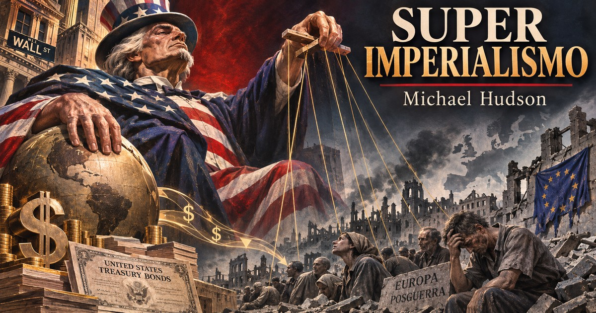
El origen y los fundamentos del dominio mundial de los Estados Unidos
Comenzar la lectura ↓Esta edición interactiva reproduce la exposición del informe editorial aportado, preservando su estructura y contenido. Los tres esquemas ilustran mecanismos descritos en él; la bibliografía y las notas de recuerdo son complementos identificados por separado.
Conversación introductoria sobre el informe elaborado a partir de la lectura de Super Imperialismo, de Michael Hudson.
Tesis general. Hudson explica el ascenso de Estados Unidos mediante el control del crédito intergubernamental, las instituciones económicas internacionales y la moneda de reserva. Su argumento culmina en una inversión de las relaciones financieras tradicionales: el país que primero dominó como acreedor aprende a conservar su autonomía como deudor, convirtiendo los dólares acumulados por otros bancos centrales en financiación del Tesoro estadounidense.
La Primera Guerra Mundial concentra créditos oficiales y oro en Estados Unidos. Su exigencia de cobrar las deudas de guerra, mientras dificulta las exportaciones de sus deudores, contribuye a desorganizar los pagos internacionales. Después de 1945, Washington utiliza esa experiencia para construir un sistema más duradero: concede financiación para la reconstrucción, abre mercados a sus productos y establece reglas monetarias y comerciales que preservan su capacidad de decisión.
La Guerra Fría altera ese equilibrio. El gasto militar exterior genera déficits y erosiona las reservas de oro. Pero la suspensión de la convertibilidad del dólar permite que la deuda estadounidense siga creciendo como activo de reserva extranjero. Los países con excedentes compran títulos del Tesoro para sostener el dólar y evitar que la apreciación de sus monedas perjudique a sus exportadores. Hudson llama a este sistema patrón de letras del Tesoro de EEUU , y al beneficio resultante, «almuerzo gratis» o señoreaje internacional.
El objeto de la crítica. Frente a Hobson, Lenin y las teorías centradas en el capital privado, Hudson destaca la capacidad de un gobierno para organizar las opciones de otros. Los beneficios empresariales y el poder estatal pueden coincidir o entrar en conflicto. El proceso combina decisiones deliberadas, errores y aprovechamiento de consecuencias imprevistas; no nace como un plan enteramente anticipado.
Recorrido del informe. Las tres partes desarrollan, respectivamente, el nacimiento del poder acreedor, los instrumentos institucionales de la dependencia y el tránsito hacia el poder del deudor. El cierre recoge las conclusiones de la segunda edición, publicadas con un prefacio de 2002. Las apreciaciones históricas y causales expuestas son las de Hudson.
Abre una consulta contextualizada o guarda el enlace original de tu conversación para recuperarla después. Los enlaces se conservan solo en este navegador.
Capital financiero intergubernamental. Créditos, deudas y reservas entre gobiernos y autoridades monetarias, distintos de las inversiones privadas, aunque condicionen sus oportunidades y rendimientos.
Problema de la transferencia. Recaudar impuestos en moneda nacional no equivale a disponer de divisas para pagar una deuda exterior. Hace falta obtener esas divisas mediante exportaciones, préstamos o ventas de activos.
Balanza de pagos y presupuesto. La primera registra relaciones económicas con el exterior; el segundo, ingresos y gastos del gobierno. No son la misma cuenta. Hudson estudia cómo el reciclaje de reservas conecta sus déficits.
Dinero activo y dinero deuda. El oro no constituye la obligación de pago de otro Estado. Un título del Tesoro es simultáneamente una deuda estadounidense y un activo para su tenedor extranjero. Esta dualidad es decisiva para el libro.
Localización de los argumentos. Las referencias a capítulos remiten al libro. El índice y las secciones siguen la organización de este informe de lectura. Los epígrafes principales del libro se identifican dentro de cada resumen. El prefacio y la introducción se integran en la apertura y en el balance final; las notas sustentan el relato histórico y las cifras del autor.
Abre una consulta contextualizada o guarda el enlace original de tu conversación para recuperarla después. Los enlaces se conservan solo en este navegador.
Orígenes de la deuda intergubernamental, 1917-1921. La guerra sustituye buena parte de las inversiones internacionales privadas por obligaciones entre gobiernos. Los antiguos préstamos podían respaldarse en ferrocarriles, minas u otras actividades generadoras de ingresos. Las nuevas deudas financian destrucción y consumo militar; su cuantía no guarda una relación equivalente con activos productivos ni con capacidad futura de pago.
Los aliados agotan sus activos estadounidenses y su capacidad de endeudamiento comercial. La entrada de Estados Unidos en la guerra permite reemplazar ese crédito por préstamos del Tesoro. Washington se considera «asociado», no aliado obligado a compartir indistintamente los costes. Tras el armisticio, los créditos de socorro y reconstrucción también sostienen las ventas estadounidenses y evitan el desplome de precios de sus excedentes, especialmente agrícolas.
Reparaciones y deudas interaliadas. Estados Unidos exige el reembolso de sus créditos y rechaza vincularlos a las reparaciones alemanas. Hudson insiste en su conexión económica: Gran Bretaña y Francia necesitan cobrar a Alemania para pagar a Washington. La «inviolabilidad de la deuda» convierte la ayuda de guerra en una cadena de tributos, sin un procedimiento realista de insolvencia soberana. El acuerdo británico de financiación de 1923 refuerza este principio y debilita el frente negociador europeo.
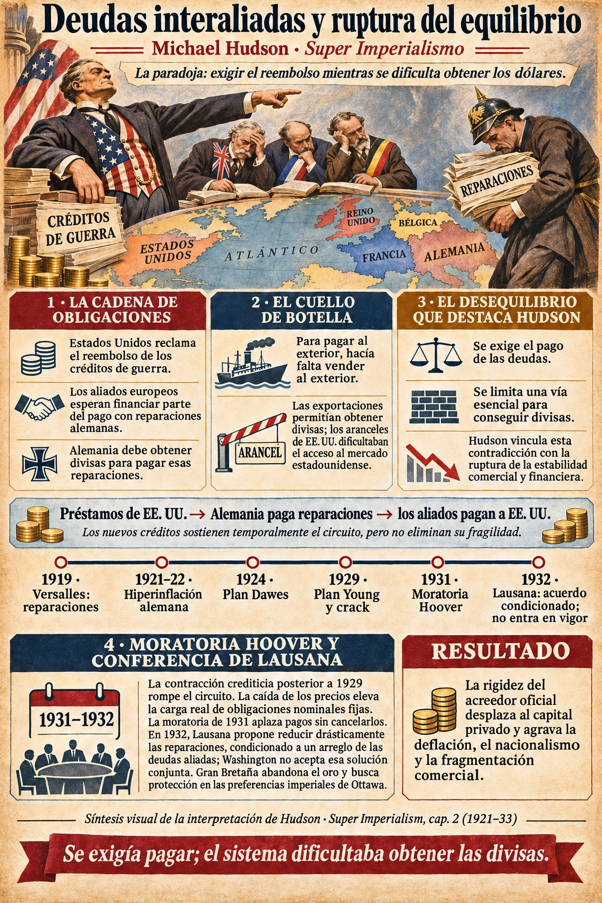
Desglose de la balanza mundial, 1921-1933. El problema no se resuelve recaudando más impuestos. Los aranceles estadounidenses dificultan que Europa obtenga dólares vendiendo mercancías. El proteccionismo Fordney y la valoración aduanera mediante el precio de productos estadounidenses neutralizan ventajas de coste extranjeras. Se exige pagar, pero se obstaculiza el medio económico de hacerlo.
Los planes Dawes y Young reorganizan las reparaciones sin suprimir la contradicción. Se mantiene un circuito triangular: inversores estadounidenses prestan a Alemania; Alemania transfiere reparaciones a los aliados; estos pagan al Tesoro estadounidense. Las deudas oficiales se sostienen mediante nuevas deudas privadas y municipales. La recuperación aparente depende de que continúe el crédito.
Moratoria Hoover y Conferencia de Lausana. La contracción crediticia posterior a 1929 rompe el circuito. La caída de los precios eleva la carga real de obligaciones nominales fijas. La moratoria de 1931 aplaza pagos sin cancelarlos; Lausana propone en 1932 reducir drásticamente las reparaciones, condicionándolo a un arreglo de las deudas aliadas. Washington no acepta esa solución conjunta. Gran Bretaña abandona el oro y busca protección en las preferencias imperiales de Ottawa.
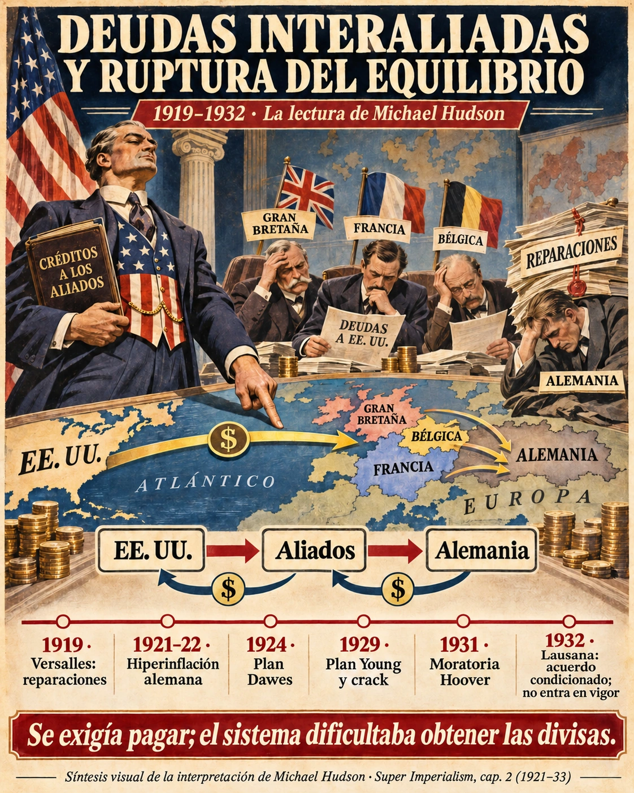
Resultado. La rigidez del acreedor oficial desplaza al capital privado y agrava deflación, nacionalismo y fragmentación comercial.
Esquema conceptual basado en el informe: el circuito dependía de la continuidad de los préstamos.
Abre una consulta contextualizada o guarda el enlace original de tu conversación para recuperarla después. Los enlaces se conservan solo en este navegador.
El conflicto entre recuperación interna y responsabilidad internacional. Hudson reconstruye las negociaciones de 1932-1933 para mostrar que las políticas económicas no derivan automáticamente de principios universales. Dependen de intereses nacionales, coaliciones políticas y concepciones sobre quién debe soportar el ajuste. El gran mercado interior estadounidense permite dar a la recuperación nacional una prioridad que las economías europeas, más dependientes del comercio, no pueden reproducir con igual facilidad.
Roosevelt se reúne con Hoover. El presidente saliente quiere negociar las deudas europeas y restablecer la cooperación financiera. Roosevelt y sus asesores, especialmente Moley y Tugwell, temen quedar comprometidos con ese programa antes de asumir el poder. Desconfían del internacionalismo de los banqueros de Nueva York, interesados en que la reducción de créditos oficiales facilite cobrar sus propios préstamos y reanudar sus negocios.
Los futuros responsables del New Deal creen que Europa podría pagar reduciendo armamento o movilizando riqueza privada. Hudson objeta que esto confunde capacidad tributaria con capacidad de transferencia. Recaudar libras o francos no proporciona los dólares exigidos si no existe una entrada compensatoria de divisas. La negativa estadounidense a tratar conjuntamente deudas, reparaciones y comercio impide una solución coherente.
Francia incumple y Gran Bretaña paga simbólicamente. Las divergencias europeas debilitan la negociación. Francia suspende pagos; Gran Bretaña intenta preservar la relación mediante pagos y, posteriormente, cantidades simbólicas. Las visitas de MacDonald y Herriot a Washington y los preparativos de la Conferencia Económica de Londres no resuelven la discrepancia: Europa busca estabilización monetaria y alivio de deuda; Roosevelt quiere libertad para elevar precios e ingresos internos.
La «bomba» de Roosevelt en Londres. Su rechazo de la estabilización cambiaria en 1933 desbarata la conferencia. Hudson introduce una distinción importante: la devaluación del dólar y la reflación interna no son, por sí mismas, políticas equivocadas. Keynes las defiende frente a la deflación. Lo destructivo es combinar una política favorable a los deudores estadounidenses con la exigencia exterior de pagar deudas que Europa no puede transferir.
El fracaso afianza bloques comerciales, controles de cambio, acuerdos bilaterales y autarquía. La política de acuerdos comerciales recíprocos de 1934 modera aranceles, pero no repara la estructura de pagos. El temor a otra guerra y la revalorización del oro favorecen nuevas entradas de metal en Estados Unidos, cuya posición financiera se fortalece mientras Europa se debilita.
Conclusión del capítulo. Hudson no atribuye a Washington un propósito consciente de provocar la Segunda Guerra Mundial. Señala la incapacidad de ejercer un liderazgo acreedor viable. El contraste anticipa 1971: Estados Unidos defenderá entonces su autonomía como deudor, mientras Europa no había sabido convertir su insolvencia de los años treinta en una fuerza negociadora comparable.
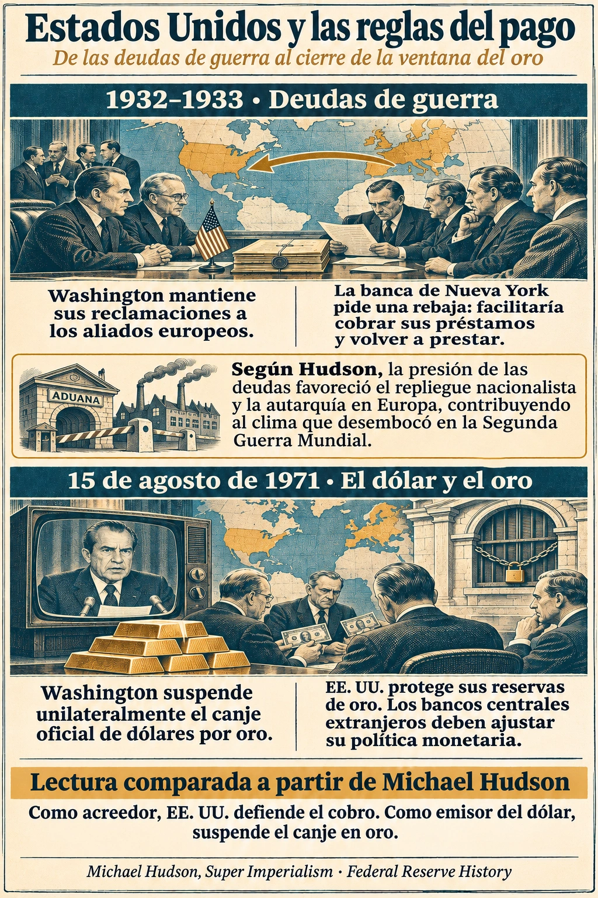
Abre una consulta contextualizada o guarda el enlace original de tu conversación para recuperarla después. Los enlaces se conservan solo en este navegador.
La ayuda de guerra como negociación de la posguerra. Gran Bretaña comienza la contienda comprando suministros estadounidenses con oro, dólares y ventas de inversiones. Cuando agota esos recursos, Estados Unidos establece el Lend-Lease o Préstamo y Arriendo. Su forma evita repetir exactamente los préstamos de 1917, pero deja abierta la compensación futura: puede consistir en beneficios políticos y económicos, no solo en dinero.
Antes de proporcionar ayuda suficiente, los negociadores estadounidenses presionan para que Londres liquide o comprometa activos y reduzca sus reservas. Hudson interpreta esa presión como preparación del desplazamiento de la libra por el dólar. No basta con derrotar al Eje: Washington quiere evitar que sobreviva un bloque británico capaz de reservar mercados y materias primas a sus propios productores.
Apertura del Imperio Británico al comercio estadounidense. El artículo VII vincula la ayuda a la eliminación del trato comercial discriminatorio y a la reducción de barreras. Su blanco principal es la Preferencia Imperial surgida de Ottawa. Keynes y Churchill intentan evitar un compromiso unilateral: eliminar las preferencias británicas sin una apertura equivalente de Estados Unidos concedería a este acceso privilegiado a mercados de los que Londres depende.
Las garantías políticas de «ayuda mutua» no neutralizan las condiciones aceptadas. El Congreso controla renovaciones y liquidación. La igualdad de sacrificios proclamada contrasta con la asimetría de reservas y obligaciones.
Renovación de 1943 y Préstamo y Arriendo Inverso. Gran Bretaña aporta suministros y servicios a las fuerzas estadounidenses mientras sigue soportando pagos previos al programa y gastos exteriores. Las restricciones a la reconstrucción de sus reservas dificultan preparar la paz. También se plantean transferencias de derechos sobre petróleo y minerales como compensación: el crédito puede convertirse en control de recursos imperiales.
Liquidación de 1945. El final de la guerra interrumpe abruptamente la ayuda. Los suministros e instalaciones pendientes de liquidación dejan una obligación que exige nueva financiación. Paralelamente, India, Egipto y otros territorios han acumulado grandes saldos en libras por sus aportaciones a la guerra. Washington presiona para desbloquearlos y permitir su conversión en compras fuera del área esterlina, especialmente de productos estadounidenses.
Qué pierde Gran Bretaña. Desaparecen instrumentos que podían ayudarle a reconstruir su posición: control sobre los saldos exteriores, preferencias comerciales y libertad monetaria. El mantenimiento de una libra sobrevalorada facilita agotar recursos británicos a favor de las exportaciones estadounidenses. Hudson subraya tanto la superioridad negociadora de Washington como los errores británicos: Londres continúa pensando como acreedor y custodio del orden financiero cuando su situación material es ya la de un deudor exhausto.
Abre una consulta contextualizada o guarda el enlace original de tu conversación para recuperarla después. Los enlaces se conservan solo en este navegador.
Bretton Woods y el triunfo del capital financiero gubernamental. En 1944-1945 Estados Unidos aprende de la experiencia de entreguerras. Para sostener sus exportaciones y el pleno empleo debe proporcionar medios de pago al exterior. Los créditos de reconstrucción, a diferencia de las deudas por destrucción bélica, pueden recuperar capacidad productiva. El FMI y el Banco Mundial organizan una financiación más duradera y multilateral bajo predominio estadounidense.
No se trata simplemente de generosidad. Los créditos permiten comprar bienes estadounidenses a cambio de aceptar mercados abiertos, convertibilidad y disciplina monetaria. La UNRRA y después el Plan Marshall complementan este proceso. La economía internacional debe crecer, pero dentro de una división del trabajo compatible con las ventajas industriales y agrícolas de Estados Unidos.
Dividir y conquistar en Bretton Woods. La cooperación angloestadounidense produce reglas que se presentan como universales, mientras las cuotas y las decisiones fundamentales garantizan una influencia privilegiada de Washington. Estados Unidos rechaza que la «escasez de divisas» permita imponerle automáticamente la obligación de corregir sus superávits. Conserva libertad para decidir si acepta las recomendaciones internacionales.
Por qué aceptan Gran Bretaña y otros países. Necesitan recursos de reconstrucción, temen el retorno a la depresión y esperan un orden cooperativo. La participación también ofrece una protección política frente a la inestabilidad. Pero el sistema canaliza pagos hacia Estados Unidos, incluso a través de terceros países: Europa vende manufacturas a regiones exportadoras de materias primas y utiliza los ingresos para comprar productos estadounidenses. América Latina pierde reservas en ese circuito.
La balanza estadounidense como eje. El superávit excesivo y la concentración de oro vuelven a amenazar la viabilidad del conjunto. Desde la guerra de Corea, el déficit estadounidense devuelve liquidez al exterior. Al principio estabiliza; más tarde, su magnitud pondrá en cuestión la convertibilidad que sustentaba la confianza en el dólar.
Aislamiento del bloque comunista, 1945-1946. La exclusión soviética no aparece inicialmente como inevitable. Se estudian cuotas del FMI y grandes créditos de reconstrucción: la URSS necesita equipamiento y Estados Unidos busca mercados y materias primas. Sin embargo, Moscú teme que la igualdad formal de oportunidades destruya industrias nacionales menos productivas y someta a Europa oriental al poder económico estadounidense.
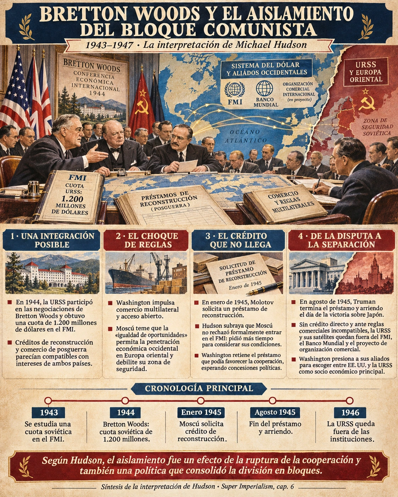
Washington no acepta una esfera soviética autónoma y retira los incentivos crediticios de una cooperación amplia. La incompatibilidad política termina separando al bloque comunista del sistema, con discriminación comercial y rearme occidental. Hudson presenta la militarización como una contradicción del proyecto liberal: la búsqueda de una economía abierta conduce a su división y a gastos de seguridad que terminarán erosionando la fortaleza financiera estadounidense. El éxito del aislamiento no equivale, por tanto, a un éxito económico sin costes.
La reconstrucción productiva convive, según Hudson, con condiciones de comercio y financiación.
Abre una consulta contextualizada o guarda el enlace original de tu conversación para recuperarla después. Los enlaces se conservan solo en este navegador.
Quién dirige la institución. La disputa entre ubicar el Banco y el FMI en Nueva York o Washington revela el conflicto entre independencia financiera y control gubernamental. Las decisiones de Savannah afianzan el segundo. Los representantes estadounidenses responden ante su gobierno mediante el Consejo Consultivo Nacional. Hudson también describe la resistencia de Wall Street, la dimisión de Eugene Meyer y las condiciones de McCloy: el control público no elimina tensiones con los prestamistas privados.
De reconstrucción a desarrollo. El Banco traslada a países pobres instrumentos que habían funcionado en economías europeas con instituciones y capacidades ya desarrolladas. Financia equipamiento importado, energía, transporte y sectores exportadores, pero no transforma suficientemente la estructura agraria, fiscal y social. El criterio de proyectos autoamortizables privilegia ingresos monetarios identificables frente a beneficios sociales generales.
El núcleo agrario. Para Hudson, industrializar requiere elevar también la productividad agrícola y alimentar el mercado interno. Las grandes propiedades, la inseguridad de los arrendatarios y la apropiación de mejoras por los terratenientes desalientan inversión y trabajo. El crédito en divisas para maquinaria no sustituye reforma agraria, crédito rural en moneda local, seguridad de tenencia, educación y política fiscal. Los ejemplos de Chile, Colombia, Ceilán, Jamaica e India muestran obstáculos institucionales que la tecnología aislada no supera.
La prohibición de interferencia política resulta asimétrica: impide cambios que perjudicarían a oligarquías locales, pero preserva relaciones sociales que determinan la distribución de los beneficios. Aunque algunas misiones reconocen estos problemas, sus recomendaciones no se traducen en una transformación operativa suficiente. El desarrollo de enclaves exportadores convive así con éxodo rural, déficit alimentario y dependencia de importaciones.
Cómo las operaciones ayudan a Estados Unidos. Las compras de bienes de capital, los intereses y la colocación de fondos favorecen su balanza de pagos. El crecimiento del préstamo bruto no garantiza una transferencia neta equivalente al prestatario: hay amortizaciones, intereses y retrasos de desembolso. Financiar exportaciones de recursos agotables sin crear una base productiva diversificada compromete, además, los medios futuros para pagar alimentos y deuda.
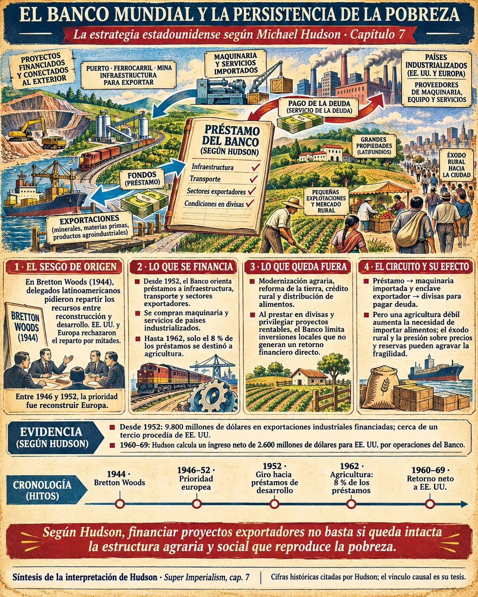
McNamara y el Informe Pearson. Se amplía el enfoque más allá de proyectos individuales, pero Hudson critica que el control demográfico ocupe el lugar de la reforma social. El informe recomienda comercio, inversión privada, más ayuda, gestión de deuda, mejor administración, asistencia técnica, educación, investigación y multilateralismo. El autor pregunta al servicio de qué estructuras operan esas medidas: más recursos pueden prolongar la dependencia si no cambian propiedad, fiscalidad y producción alimentaria.
Conclusión. La pobreza exige transformar la organización de los recursos. Hudson contempla organismos propios de los prestatarios que financien su autosuficiencia.
Abre una consulta contextualizada o guarda el enlace original de tu conversación para recuperarla después. Los enlaces se conservan solo en este navegador.
Ayuda nominal y transferencia efectiva. Hudson distingue donación, préstamo comercial, promoción exportadora y apoyo militar. Agruparlos como «ayuda» oculta beneficiarios y costes. Una autorización presupuestaria estadounidense no implica que salgan dólares utilizables libremente por el receptor. El Eximbank financia compras a productores estadounidenses; el país prestatario recibe mercancías y contrae obligaciones de principal e intereses.
Militarización. La ayuda mantiene gobiernos y estructuras sociales aliados, sostiene países de defensa avanzada y sustituye parte del despliegue directo por ejércitos locales equipados con armas estadounidenses. La dependencia de repuestos y nuevos sistemas prolonga esa relación. Los ejemplos de Grecia, Turquía, Corea del Sur y Taiwán cuestionan la identificación automática entre ayuda al «mundo libre» y democracia.
Comercio triangular y balanza de pagos. Un déficit bilateral con Japón no expresa por sí solo una pérdida estadounidense: las compras japonesas a terceros países pueden generar beneficios de filiales estadounidenses y demanda posterior de exportaciones de Estados Unidos. La guerra de Vietnam altera ese circuito al absorber capacidad industrial y estimular consumo e importaciones. Hudson atribuye al gasto militar el desequilibrio decisivo, frente a explicaciones que culpan sin más a la ayuda o a toda inversión exterior.
Cómo la ayuda alimentaria fomenta la dependencia agrícola. La Ley Pública 480 coloca excedentes de la Commodity Credit Corporation. Los alimentos se venden inicialmente a cambio de monedas locales que agencias estadounidenses utilizan para sus propios gastos; así evitan desembolsar dólares. Se crean mercados y hábitos de consumo favorables a las exportaciones estadounidenses. Las cláusulas de compras comerciales y adicionalidad buscan impedir que los suministros financiados sustituyan ventas ordinarias de Estados Unidos.
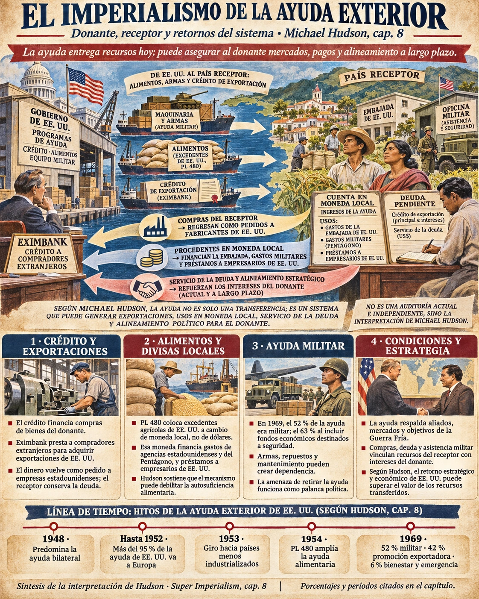
El receptor queda comprometido con compras y condiciones que limitan su política alimentaria. La ayuda ligada, los fletes estadounidenses y las operaciones bancarias exigidas pueden encarecer los bienes. El tránsito hacia reembolsos en divisas fuertes agrava la carga exterior. La amenaza de retirar ayuda también protege inversiones estadounidenses frente a expropiaciones, como ilustra la enmienda Hickenlooper.
Rentabilidad y dirección política. En su balance de 1970, Hudson calcula un ingreso neto de 1.300 millones de dólares: 2.000 millones de cobros de intereses y principal frente a 700 millones de coste en divisas. La cifra ilustra su distinción entre gasto presupuestario y coste exterior. La centralización en la AID integra promoción comercial y objetivos de seguridad.
Informe Peterson y deuda del Tercer Mundo. La propuesta multilateral busca repartir costes entre Europa y Japón, reducir resistencias a la ayuda bilateral y mantener capacidad de actuación del Ejecutivo. Los préstamos de terceros ayudan a los receptores a pagar deudas y comprar productos estadounidenses. Frente a la creciente carga financiera, reprogramar vencimientos sin transformar la estructura productiva perpetúa el circuito: nuevas deudas sostienen pagos anteriores y subordinan el desarrollo a la obtención de divisas.
Abre una consulta contextualizada o guarda el enlace original de tu conversación para recuperarla después. Los enlaces se conservan solo en este navegador.
De la OIC al GATT. La Organización Internacional del Comercio prevista en la Carta de La Habana debía relacionar comercio, empleo y desarrollo. No prospera porque Estados Unidos no acepta limitar suficientemente su autonomía y porque otros países tampoco consienten una apertura incompatible con sus necesidades. El Congreso conserva su capacidad de responder a industrias, agricultores y sindicatos amenazados por importaciones.
El GATT ocupa un ámbito más estrecho, centrado en concesiones arancelarias y reglas comerciales. Hudson destaca el contraste entre el liderazgo estadounidense al reclamar compromisos ajenos y su disposición a mantener excepciones nacionales. La oposición a un organismo en el que no posee veto diferencia el fracaso de la OIC del diseño financiero de Bretton Woods.
Los artículos decisivos. El artículo I establece la nación más favorecida, con excepciones para preferencias existentes. El VII trata la valoración aduanera: Hudson contrapone el valor real de importación al sistema estadounidense de valorar determinados bienes según precios nacionales, que refuerza su protección. El XI prohíbe restricciones cuantitativas, pero deja excepciones agrícolas cuya utilización resulta central en los conflictos posteriores.
Los artículos XII y XIV permiten defensas vinculadas a dificultades de pagos y divisas inconvertibles; el XIII regula la aplicación no discriminatoria de contingentes. El XVII aborda el comercio estatal; el XVIII reconoce necesidades de industrias nacientes; el XIX permite medidas de emergencia ante perjuicios por importaciones. Estas disposiciones muestran que el sistema efectivo nunca equivale a un libre comercio absoluto.
Agricultura y reservas de soberanía. Estados Unidos protege su sector agrario, pero combate instrumentos comparables de otros países, en particular la Política Agrícola Común europea. Quiere conservar cuotas de mercado y evitar que sus clientes se vuelvan autosuficientes. La ayuda ligada, las reglas Buy American, las subvenciones al transporte y la valoración aduanera especial prolongan protecciones que las reducciones de aranceles no eliminan.
Las rondas Dillon y Kennedy producen concesiones, pero no resuelven estas asimetrías. Los conflictos sobre vidrio y productos avícolas ilustran la reciprocidad de represalias. Los países menos desarrollados tienen menos capacidad de negociación porque pueden ofrecer pocas concesiones a cambio de las protecciones y oportunidades que necesitan.
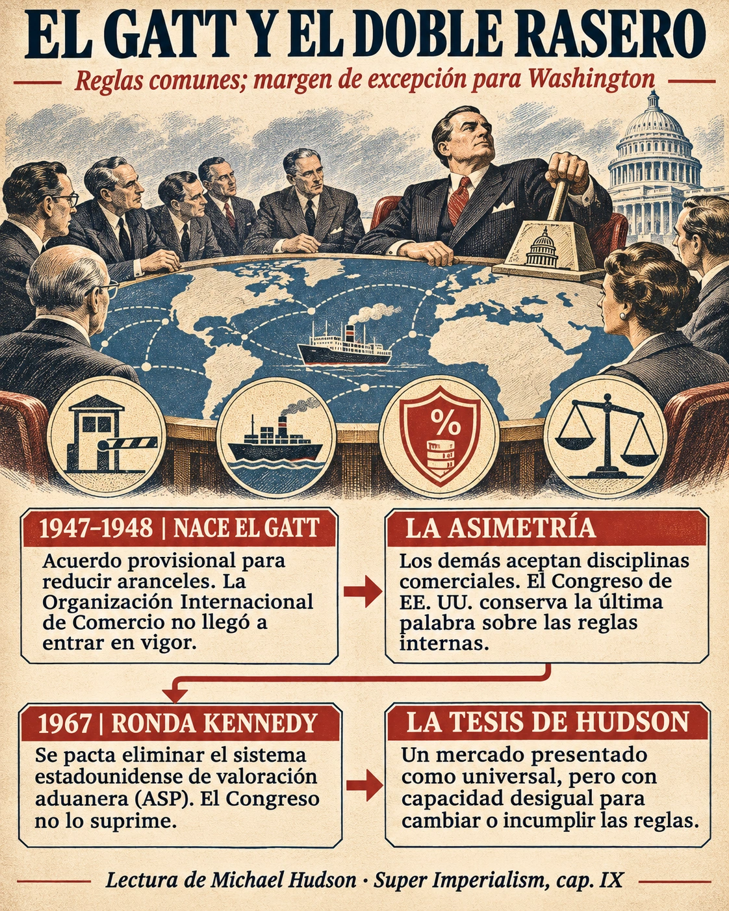
La ruptura de 1971. El recargo estadounidense del 10% sobre determinadas importaciones sujetas a derechos, las restricciones textiles y la presión para revaluar monedas extranjeras subordinan los compromisos multilaterales a la mejora exigida de los pagos estadounidenses. Hudson interpreta el conjunto como defensa política de una supremacía que ya no reproduce espontáneamente el mercado.
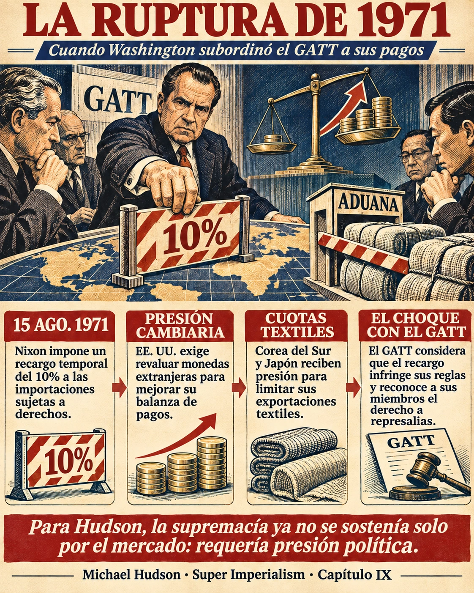
Conclusión. El doble rasero exige reglas estables a los demás y reserva a Estados Unidos la posibilidad de alterarlas en su beneficio.
Abre una consulta contextualizada o guarda el enlace original de tu conversación para recuperarla después. Los enlaces se conservan solo en este navegador.
Cómo se arruinó Gran Bretaña. El préstamo angloestadounidense de posguerra facilita que Londres acepte Bretton Woods, pero exige convertibilidad y limita su capacidad de utilizar preferencias y controles. Gran Bretaña renuncia a protecciones transitorias disponibles para otros miembros. Sus saldos exteriores en libras pueden transformarse en demanda de dólares y mercancías estadounidenses, consumiendo la nueva financiación sin reconstruir una posición británica sostenible.
Paridades fijas y sobrevaloración. Las monedas se expresan en oro o en el dólar de la paridad de 1944, equivalente a 35 dólares por onza. El FMI admite ajustes para corregir desequilibrios fundamentales, pero busca impedir devaluaciones competitivas. Hudson sostiene que mantener la libra a su paridad de guerra restringe exportaciones británicas y prolonga su vulnerabilidad hasta la devaluación de 1949.
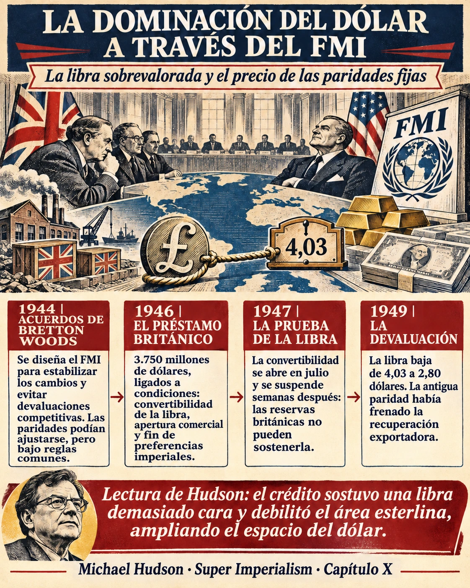
El problema no es la estabilidad como tal, sino estabilizar una relación inadecuada. La defensa del cambio obliga a sacrificar actividad y empleo. La posterior política británica de stop-go alterna expansión y freno para responder a crisis de pagos. Los costes de mantener compromisos militares e imperiales agravan esa dinámica y aumentan la dependencia del apoyo financiero estadounidense.
Cómo se fijan las cuotas. Las cuotas combinan variables económicas, necesidades de financiación y negociación política; determinan aportaciones, acceso a recursos y votos. Estados Unidos obtiene capacidad de bloquear decisiones fundamentales. Las reglas de suscripción en oro o dólares imponen, además, una carga inicial a países que precisamente carecen de reservas. La autoridad formalmente multilateral conserva así una jerarquía nacional.
El carácter marginal de los primeros préstamos. El Fondo nace como depósito común de monedas y oro, no como banco capaz de crear libremente el crédito requerido por la reconstrucción. Hudson contrasta este diseño con la unión de compensación y la financiación más amplia defendidas por Keynes. El acceso condicionado y limitado no cubre grandes desequilibrios; los primeros giros son modestos y el Fondo desempeña un papel reducido en la emergencia europea de 1947.
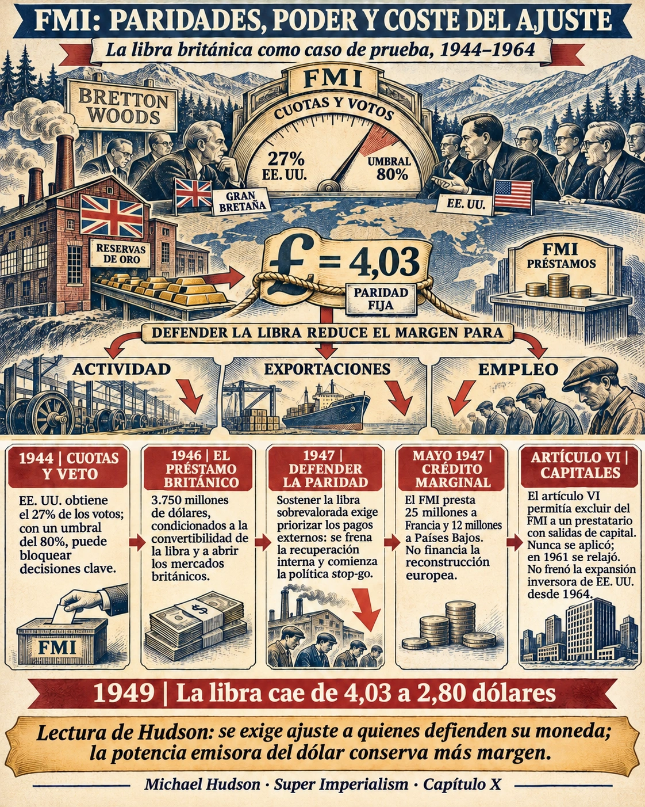
Las disposiciones sobre transferencias de capital pretenden evitar que el crédito del FMI sostenga salidas prolongadas de capital. Ese principio resultará controvertido cuando Estados Unidos incurra en déficit mientras sus empresas compran activos extranjeros. El autor pide observar la diferencia entre las reglas originales y su adaptación posterior a la posición estadounidense.
Conclusión institucional. El FMI influye sobre todo fijando políticas. Sus reglas consagran al dólar y disciplinan a otros deudores. Estados Unidos conserva sus privilegios cuando pierde oro, mediante la adaptación de las prácticas que podrían obligarlo a ajustar su economía.
Abre una consulta contextualizada o guarda el enlace original de tu conversación para recuperarla después. Los enlaces se conservan solo en este navegador.
Financiación de las guerras con recursos ajenos, 1964-1968. La expansión militar y el programa de «armas y mantequilla» desbordan el margen exterior de Estados Unidos. Financiar la guerra sin impuestos suficientes aumenta demanda e inflación, mientras el gasto en ultramar inyecta dólares en otros países. Europa puede conservarlos o reclamar oro; Francia utiliza esa opción para cuestionar una guerra que no desea financiar.
Las respuestas estadounidenses incluyen pagos anticipados de deudas europeas, compras aliadas de armamento, acuerdos de compensación, swaps, títulos especiales del Tesoro y restricciones al capital privado. Hudson distingue la mejora efectiva de los pagos de los cambios contables que presentan financiación del déficit como si lo hubieran eliminado. La prioridad es conservar los compromisos públicos y hacer que otros sectores aporten los recursos.
El Gold Pool y la crisis de 1968. Los bancos centrales cooperan para sostener el precio del oro a 35 dólares. La retirada francesa, la devaluación de la libra de 1967 y la creciente especulación agotan su viabilidad. En marzo de 1968 el Pool se disuelve y aparece un mercado de dos niveles: precio oficial entre autoridades monetarias y precio privado fluctuante. Se debilita así el vínculo entre dólar, oro y disciplina exterior.
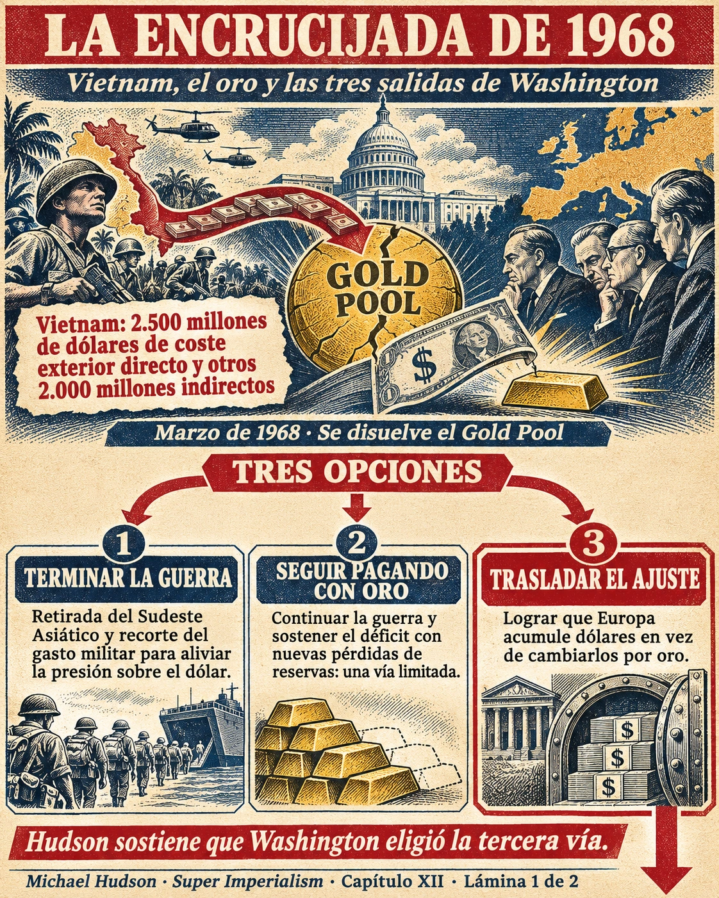
El poder a través de la quiebra, 1968-1970. Agotarse el oro no lleva a Washington a someter sus políticas a los acreedores. La alternativa es inducirlos a conservar dólares y títulos del Tesoro. Rechazarlos amenaza sus reservas, sus tipos de cambio y el sistema que utilizan. El deudor central obtiene poder porque sus obligaciones forman parte de la base financiera de los acreedores.
Derechos Especiales de Giro. El FMI crea un activo de reserva adicional, distribuido conforme a cuotas. Hudson contrasta esta innovación con el rechazo estadounidense de una liquidez internacional más amplia cuando era acreedor. Los DEG alivian ahora la restricción del deudor principal; las discusiones sobre activación, aceptación y reconstitución enfrentan a quienes desean financiar déficits con quienes quieren corregirlos. La asignación no se organiza prioritariamente según las necesidades de desarrollo de los países pobres.
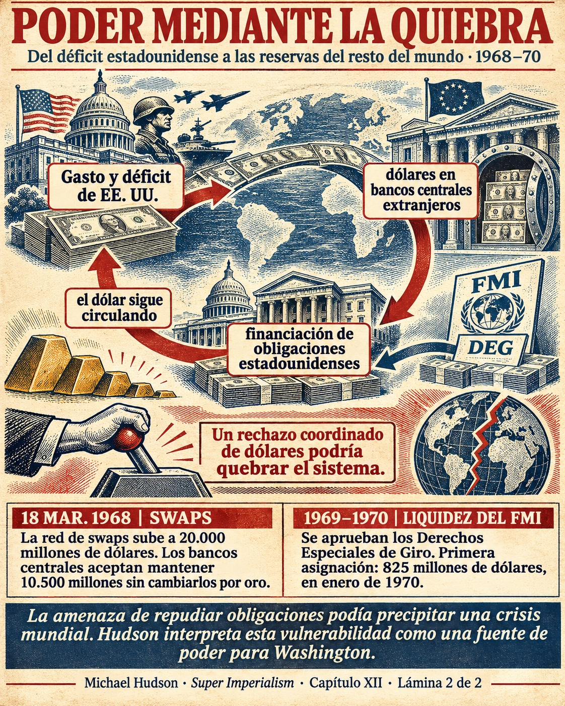
La hipótesis del intermediario financiero internacional. Sus defensores comparan a Estados Unidos con un banco que recibe fondos a corto plazo e invierte a largo. Hudson rechaza equiparar las reservas oficiales acumuladas bajo presión con depósitos privados voluntarios. La iniciativa procede del gasto y del crédito estadounidenses; las autoridades extranjeras absorben el resultado para sostener el cambio. Definir como «equilibrio» cualquier déficit financiable oculta tanto su origen militar como la coerción institucional.
Resultado. La fragilidad del deudor se convierte en poder negociador frente a quienes sostienen sus obligaciones.
Abre una consulta contextualizada o guarda el enlace original de tu conversación para recuperarla después. Los enlaces se conservan solo en este navegador.
Las cuotas textiles y las amenazas de represalia. Las propuestas proteccionistas de Mills y las presiones de la Administración Nixon trasladan a Europa y Asia la exigencia de mejorar la posición estadounidense. Japón y el Mercado Común amenazan con responder. La disputa deja de ser solo arancelaria cuando Europa considera utilizar sus reservas para reclamar oro y limitar la libertad estadounidense.
Hudson relaciona las restricciones «voluntarias» de exportación con una negociación desigual: los proveedores aceptan limitar ventas ante la amenaza de medidas más duras. Los compromisos con la industria textil estadounidense y la presión sobre Japón, Corea del Sur, Taiwán y Hong Kong muestran cómo objetivos internos determinan condiciones comerciales ajenas.
La crisis del dólar del verano de 1971. La salida de capitales hacia marcos y otras monedas obliga a los bancos centrales a elegir entre comprar dólares o permitir la apreciación. Washington practica una «desatención benigna»: evita corregir el flujo y trata sus consecuencias como problema extranjero. Las diferencias entre Alemania, Francia e Italia dificultan una respuesta conjunta y perturban la coordinación monetaria y agrícola europea.
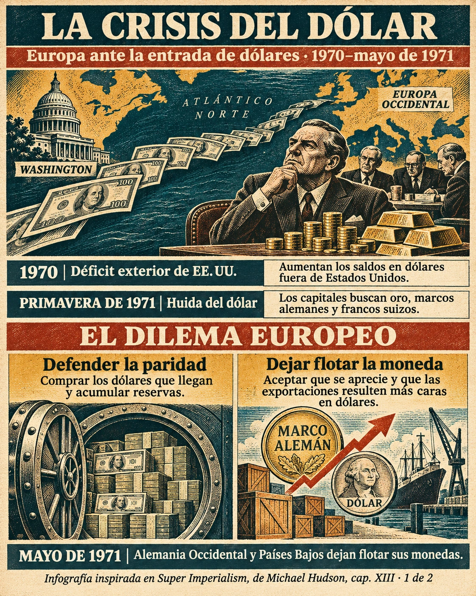
El vínculo militar refuerza la negociación. La presencia de tropas estadounidenses, sus costes y las propuestas de retirada se convierten en argumentos sobre quién debe financiar el sistema de seguridad. La posición acreedora de Europa no se transforma automáticamente en autonomía política frente a Estados Unidos.
El 15 de agosto y sus consecuencias. Nixon suspende la convertibilidad del dólar en oro, impone un recargo del 10% a determinadas importaciones y aplica controles internos de salarios y precios. El cierre del oro suprime la vía mediante la cual los acreedores podían exigir liquidación en un activo distinto de la moneda del deudor. Hudson lo describe como repudio efectivo de la obligación exterior de conversión; las obligaciones nominales en dólares continúan existiendo.
La revaluación de las monedas extranjeras mejora los precios relativos estadounidenses y reduce el valor de las reservas en dólares medido en esas monedas. Washington exige, además, concesiones agrícolas y comerciales, con una mejora de pagos que cifra en torno a 13.000 millones de dólares anuales. Francia resiste con mayor firmeza, pero no logra organizar una alternativa común.
El arreglo de finales de 1971. El proceso culmina en el acuerdo Smithsonian: se modifican paridades, se amplían márgenes de fluctuación y se eleva el precio oficial del oro a 38 dólares, sin restaurar la convertibilidad. Estados Unidos retira el recargo. Para Hudson, el arreglo conserva la sustancia de su ventaja.
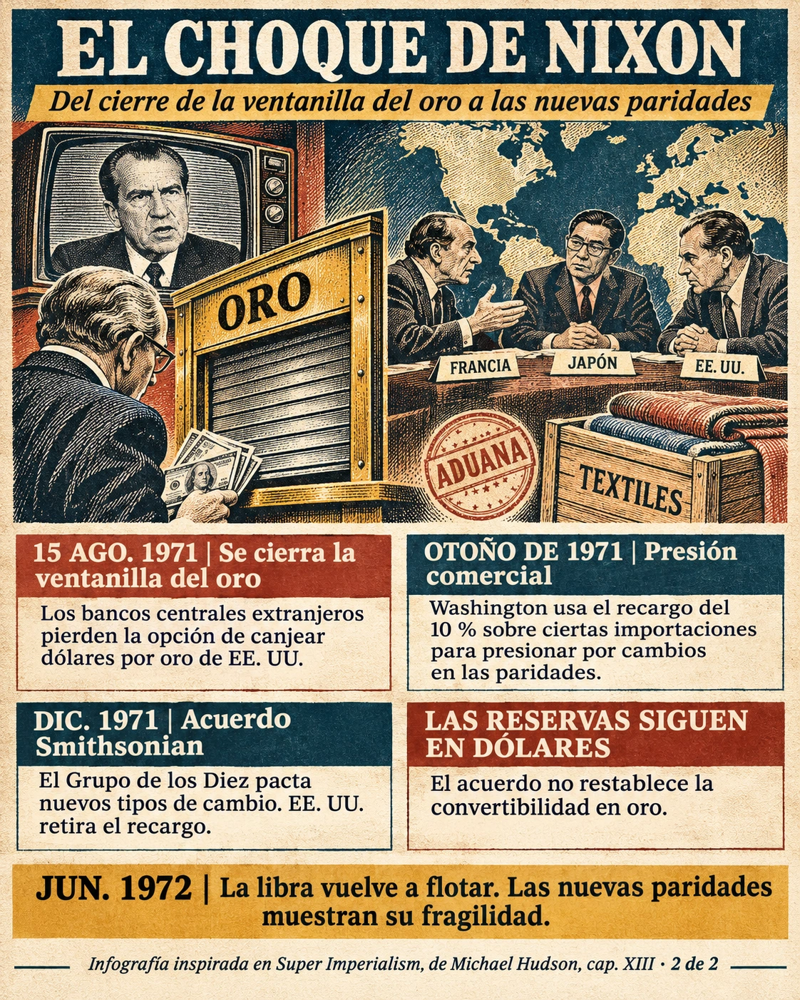
La cuestión pendiente. Si los extranjeros gastaran sus reservas comprando producción estadounidense, esta debería entregar recursos reales. La siguiente fase buscará mantener esos saldos dentro del circuito financiero del Tesoro, evitando que el ajuste recaiga plenamente en la economía estadounidense.
Abre una consulta contextualizada o guarda el enlace original de tu conversación para recuperarla después. Los enlaces se conservan solo en este navegador.
Del recurso defensivo a la estrategia deliberada. Tras el Smithsonian, Washington comprende mejor que el exceso de dólares puede financiar su presupuesto. Los bancos centrales compran dólares para impedir que sus monedas suban y después adquieren deuda estadounidense. Si permiten inflación, se erosiona el valor real de las reservas; si revalúan, perjudican a sus exportadores. La vulnerabilidad se traslada a los acreedores.
Las propuestas de reorganización. El Informe Danielian estudia inmovilizar reservas en créditos de largo plazo y canalizarlas incluso hacia inversión pública estadounidense. Otras propuestas pretenden convertir obligaciones en dólares en DEG, repartir su responsabilidad entre miembros del FMI o imponer ajustes automáticos a países que aumenten reservas. Hudson destaca que no se ofrece a los deudores pobres una solución comparable.
La crisis de febrero y marzo. El dinero fácil y las salidas de capital intensifican la presión. Se produce otra devaluación del dólar y los mercados de divisas cierran temporalmente. Europa intenta coordinar una flotación y defenderse con controles a entradas de capital, restricciones de intereses y reservas obligatorias. Las negociaciones bilaterales estadounidenses explotan sus divisiones. La intervención oficial europea continúa alimentando la compra de títulos del Tesoro.
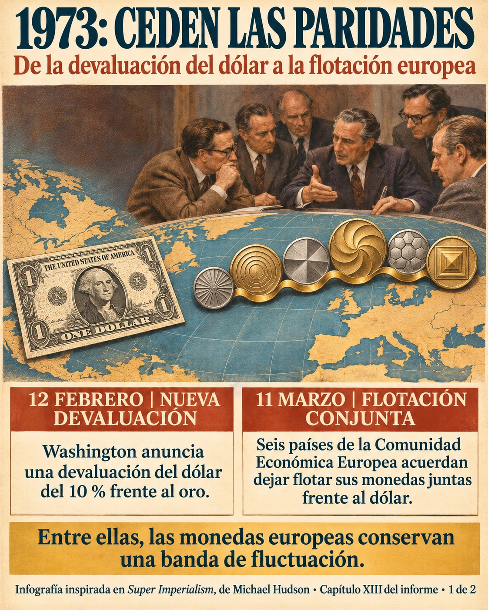
El oro gana precio en los mercados privados, pero deja de proporcionar un mecanismo operativo simétrico de liquidación oficial. Los movimientos de capital y las decisiones políticas dominan el cambio: Hudson objeta a las explicaciones basadas únicamente en comparar precios de mercancías. También rechaza atribuir la crisis principalmente a multinacionales o exportadores árabes, pasando por alto la política estadounidense.
Agricultura, comercio y armamento. Washington reclama acceso agrícola y capacidad de imponer restricciones país por país. Pero cuando suben sus precios internos limita exportaciones de soja, otros alimentos y materiales. Europa y Japón descubren que no pueden contar incondicionalmente con suministros estadounidenses. La contradicción es explícita: deben comprar más, mientras el proveedor reserva para sí el derecho a restringir ventas. Paralelamente, las exportaciones de armas reciclan ingresos extranjeros hacia Estados Unidos.
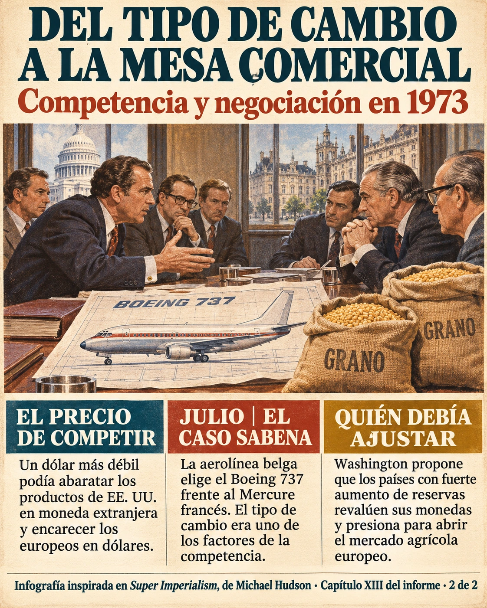
¿Condominio soviético-estadounidense? La distensión ofrece nuevos mercados para cereales, tecnología y equipamiento, además de proyectos de energía y fertilizantes. El arreglo de deudas soviéticas de Lend-Lease y los créditos comerciales facilitan el acercamiento. Hudson considera un posible entendimiento de las dos potencias sobre sus respectivas áreas, pero reconoce que Moscú negocia también con otros proveedores y no garantiza primacía industrial estadounidense.
Cereales y petróleo. El autor vincula las ventas de grano a la URSS, la subida de precios alimentarios y los embargos agrícolas con la reacción de los exportadores de petróleo en 1973. Los excedentes de la OPEP pasan a ser una fuente importante de financiación en dólares. El capítulo abre así el problema de un nuevo orden económico internacional y remite su desarrollo a Global Fracture.
Mecanismo central de la exposición: obligaciones del deudor que constituyen activos para sus acreedores.
Abre una consulta contextualizada o guarda el enlace original de tu conversación para recuperarla después. Los enlaces se conservan solo en este navegador.
El horizonte de la segunda edición. Hudson examina desde 2002 cómo se ha normalizado lo que en 1971-1973 provocaba crisis. Los déficits de pagos alcanzan magnitudes mucho mayores, pero los bancos centrales siguen acumulando títulos del Tesoro. La continuidad no prueba para él una reciprocidad satisfactoria: refleja el coste de abandonar un sistema en el que las reservas propias son obligaciones del principal deudor.
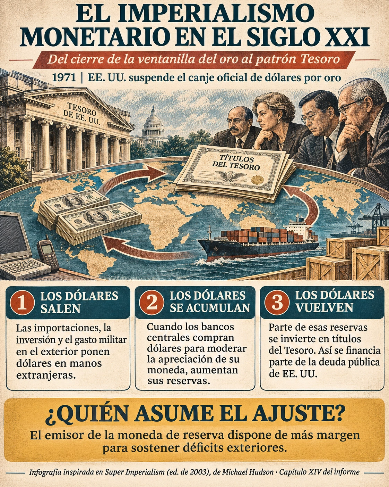
Imperialismo alimentario frente a un nuevo orden económico internacional. Las instituciones de ayuda conservan la orientación hacia exportaciones y servicio de deuda. Las iniciativas de autonomía del Tercer Mundo y de estabilización de materias primas pierden fuerza. Washington busca mercados para sus excedentes y suministros baratos, mientras combate protecciones extranjeras semejantes a las que utiliza en su propio sector agrícola.
Las economías extranjeras se convierten en variables de ajuste: deben comprar cuando Estados Unidos necesita vender, soportar restricciones cuando este necesita abastecerse y adaptar sus políticas a demandas de Washington. La dependencia productiva refuerza la financiera porque la necesidad continua de alimentos, tecnología y armamento exige divisas.
Privatización, austeridad y fuga de capitales. La revisión incorpora Rusia y otras economías endeudadas. Hudson critica que FMI y Banco Mundial sostengan regímenes y reformas que transfieren bienes públicos a propietarios privados, facilitan salida de ingresos y mantienen deudas en dólares. La venta de activos aporta divisas inmediatas, pero elimina ingresos públicos y genera futuras remesas de beneficios. El autor propone gravar rentas de recursos y del dominio público, en lugar de entregar esas rentas y desplazar impuestos hacia el trabajo.
La asimetría del patrón de letras del Tesoro. A los deudores periféricos se les exige austeridad y cesión de activos; Estados Unidos conserva expansión interna y libertad exterior. Las compras oficiales de deuda reducen sus necesidades de financiación nacional. Los prestamistas extranjeros sufren depreciación del dólar sin obtener una influencia política equivalente a la que Washington ejerce sobre sus propios deudores.
Japón sirve como ejemplo de subordinación acreedora. Hudson conecta los acuerdos Plaza y Louvre y las políticas de tipos bajos con la economía de burbuja japonesa. En el prefacio también menciona la crisis asiático-rusa, la dolarización y Argentina. Estos episodios amplían la tesis histórica; no sustituyen su mecanismo central por una explicación puramente empresarial.
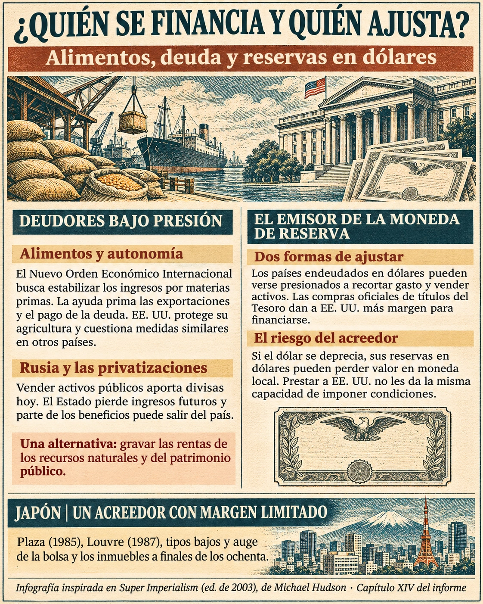
El oro y las alternativas. Hudson distingue entre liberar el crédito nacional para sostener producción y empleo y permitir déficits internacionales sin restricción. El oro limitaba estos últimos; los DEG y el euro no habían constituido, en su valoración de 2002, una alternativa política independiente y simétrica. La autonomía requiere instituciones monetarias propias, coordinación entre países y voluntad de asumir los costes iniciales de romper la dependencia. La crítica concluye en el terreno de la soberanía, no en una receta técnica aislada.
Abre una consulta contextualizada o guarda el enlace original de tu conversación para recuperarla después. Los enlaces se conservan solo en este navegador.
Una continuidad con inversión del mecanismo. El Tesoro pasa del cobro de deudas interaliadas a la financiación institucional de la reconstrucción y, finalmente, a emitir deuda que otros gobiernos mantienen como reserva. Las posiciones acreedora y deudora sirven a una misma prioridad: máxima autonomía para Washington.
Tres circuitos. En los años veinte: préstamos privados a Alemania, reparaciones a los aliados y pagos al Tesoro. En la reconstrucción: crédito estadounidense y multilateral para comprar exportaciones estadounidenses. Bajo el patrón de letras del Tesoro: gasto exterior, acumulación de dólares en reservas extranjeras y reinversión en deuda pública estadounidense. Cambian quién inicia el flujo y quién soporta el ajuste.
Dependencia productiva y disciplina financiera. Banco Mundial, FMI, ayuda y reglas comerciales se refuerzan mutuamente. La especialización y el déficit alimentario exigen importaciones; la deuda reclama divisas; la condicionalidad limita respuestas autónomas. Los compromisos militares subordinan recursos adicionales a prioridades estadounidenses.
Matices de la explicación. Hudson reconoce la eficacia reconstructora inicial, conflictos entre funcionarios y banqueros, resistencias extranjeras y propuestas estadounidenses fallidas. No equipara toda ayuda con perjuicio ni todo resultado con intención. Critica la estructura que decide qué desarrollo se financia y quién conserva libertad de acción.
La conclusión de Hudson. El superimperialismo puede operar sin dominio territorial directo: deudas, reservas y normas multilaterales transfieren al exterior el coste de políticas estadounidenses. Comprenderlo exige estudiar relaciones intergubernamentales y beneficios efectivos, sin identificar libre mercado con neutralidad institucional.
Su alternativa general es recuperar capacidad política para orientar crédito, fiscalidad, agricultura y comercio hacia necesidades propias; cuestionar deudas que exceden la capacidad de pago; y crear arreglos monetarios que no obliguen a financiar indefinidamente al emisor del activo de reserva. El libro termina atribuyendo a la falta de imaginación institucional y de coordinación internacional parte de la persistencia del dominio del dólar.
Referencia de la obra. Michael Hudson, Super Imperialismo. El origen y los fundamentos del dominio mundial de los Estados Unidos, segunda edición, Pluto Press, 2003; prefacio de 2002. Referencias internas: prefacio, introducción y capítulos 1-15, con sus notas. La paginación corresponde a este informe de lectura.
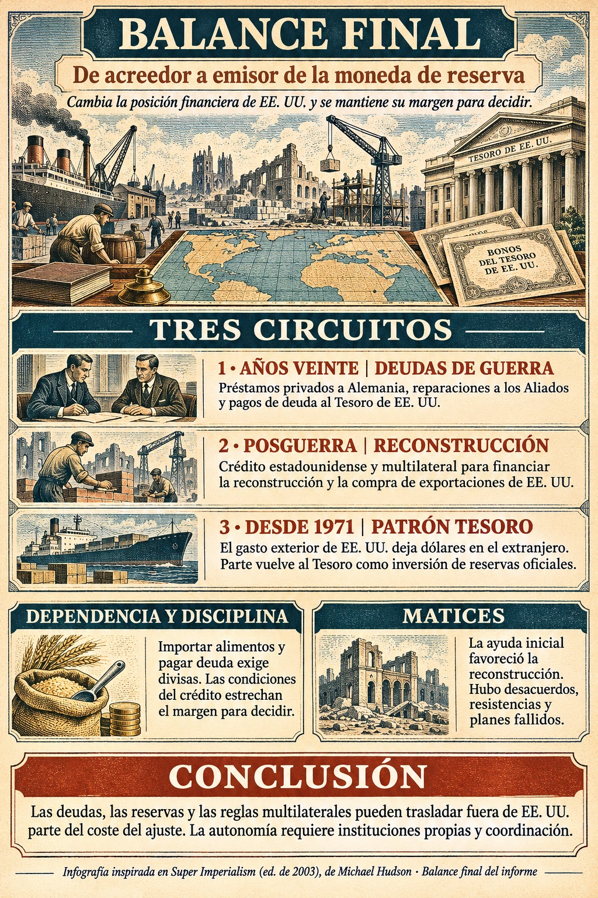
Abre una consulta contextualizada o guarda el enlace original de tu conversación para recuperarla después. Los enlaces se conservan solo en este navegador.
Selección de obras citadas en las notas del libro. Las explicaciones de relevancia son editoriales, no anotaciones originales de Hudson.
Reparaciones, deudas y límites de la paz económica de posguerra.
Estudio de la formación y el peso de las deudas interaliadas.
Relación entre deuda oficial, pagos y prosperidad económica.
Análisis de la posición de pagos e inversión exterior estadounidense.
Perspectiva de Estados Unidos como intermediario de liquidez mundial, que Hudson discute.
Formulaciones breves de las tesis del informe para repasar conceptos. No son citas literales de Hudson.
La deuda puede convertirse en subordinación cuando el acreedor impone condiciones que obstaculizan la recuperación del deudor.
Recaudar impuestos nacionales no crea por sí solo las divisas necesarias para pagar una deuda exterior.
La reconstrucción de posguerra también configuró mercados, pagos y relaciones de dependencia.
Banco Mundial y FMI reflejan las relaciones de poder que intervienen en su diseño y funcionamiento.
La ayuda exterior puede financiar compras y fortalecer estructuras políticas favorables al país proveedor.
La apertura exigida a otros países convivió con instrumentos estadounidenses de protección propia.
El cierre de la ventanilla del oro privó a los acreedores de un mecanismo decisivo de liquidación.
Cuando su deuda sirve de reserva a otros países, el deudor central adquiere capacidad de negociación.
Las reservas extranjeras en dólares pueden regresar a Estados Unidos mediante compras de deuda pública.
Romper la dependencia exige capacidad propia de decisión monetaria, productiva y financiera.